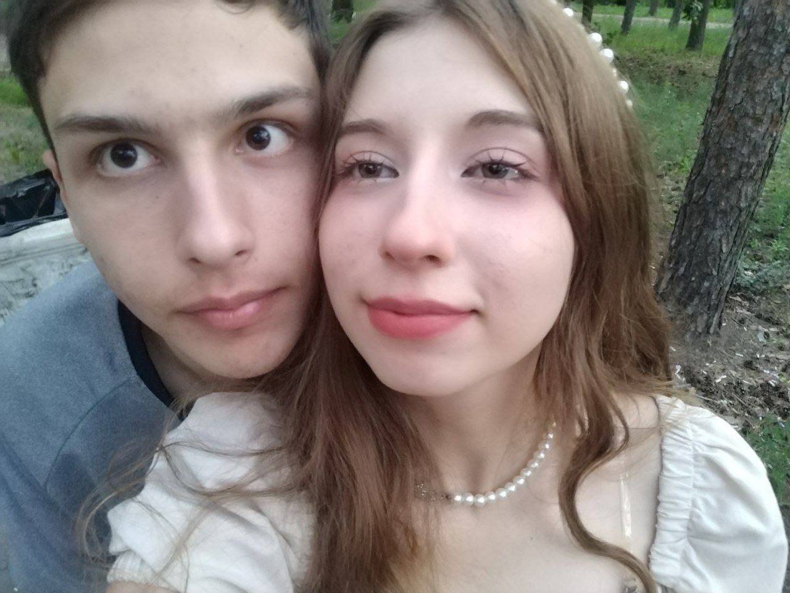
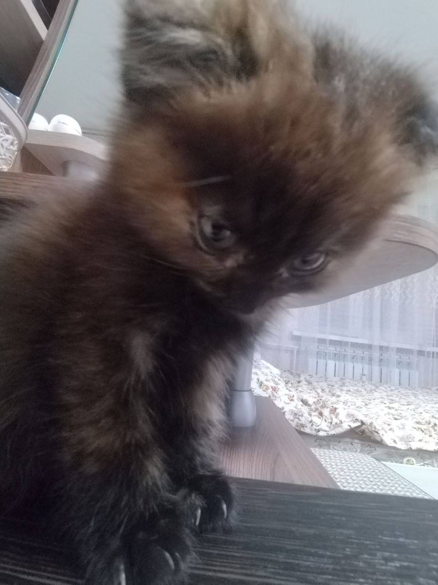
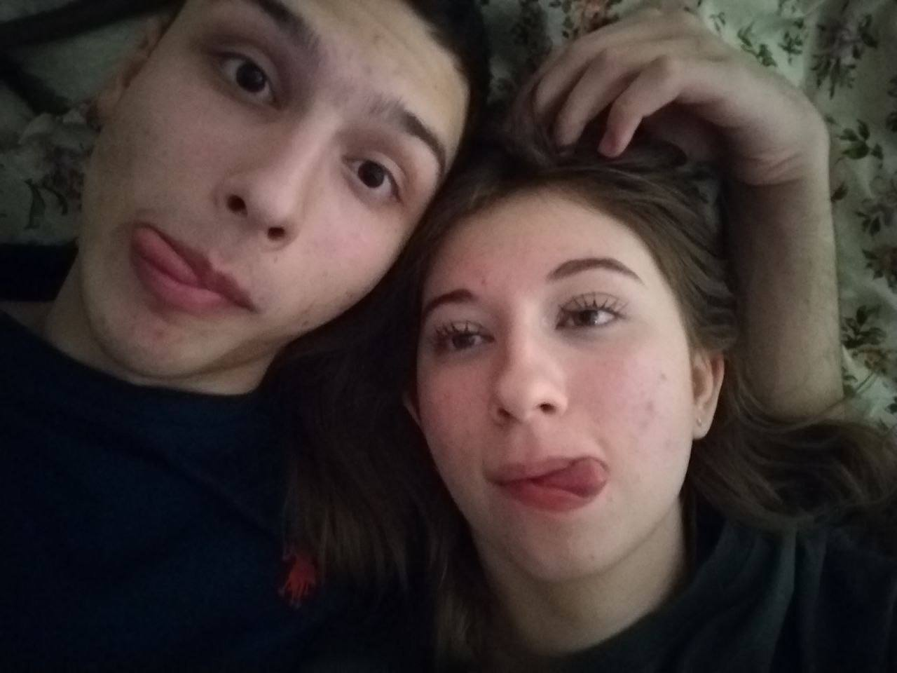

Это будет небольшая история ,о начале самого лучшегои самого приятного по сей день периода моей жизни.
26 июня 2025 года , в 17:44 , мы с моей любимой Сонечкой впервые списались , с самых первых сообщений ты мне безумно понравилась , я видел что тебе и вправду интересно со мной общаться , и мне было с тобой безумно интересно и приятно общаться (да и сейчас жить без общения с тобой не могу) , каждое утро , с того дня не прошло без мыслей о тебе , и я безумно хотел с тобой увидеться в живую. Вскоре , после того как мои офицеры безпричинно отказали мне в увольнении , я всё таки нашёл способ как нам с Соней встретиться , я пошёл отпрашиваться в больницу.

6 июля 2025 года я очень долго не мог уснуть , неперставая думать о соне , и очень переживал по поводу встречи "О чём будем разговаривать? как она на меня отреагирует? где и как мы встретимся? какая она в жизни?" много вопросов терзали и не давали мне спать в ту ночь , но ни смотря на всё это , я твёрдо решил , "Сказал что встретимся , значит встретимся." . На утро 7 июля , я пощёл как обычно в санчасть , в тот далёкий понедельник , с самых ранних часов , солнышко грело как не в себя , а очередь в санчасти была невыносимо долгая , отстояв её , я наконец-то получил так ожидаемое мной направление , а вследствие и увольнение , и я бежал , не оглядываясь , я спешил встретиться с моей будущей любимой. и вот я стою за КПП , уже заказал такси и жду его приезда , понемногу снова начинаю нервничать , но после того как я сел в такси , и поехал на адрес , который я видел впервые в жизни , моё сердце начало стучать в грудной клетке с нереальной скорость , от этого напряжения мне становилось нехорошо , но я ехал дальше , навстречу к Соне. Вот я приехал , понадобилось около 10-15 минут на поиск нужной мне остановки (она была напротив места моей высадки) , я ожидал , толком не зная как выглядит Соня, я стоял высматривая каждого человека на улице , и вот она , невероятная красавица , в широких шортах , серой кофте и с распущенными волосами , я оцепенел , ещё немного , и я бы потерял сознание от такой ослепительной девушки , но меня ждал сюрприз , Соня была с подругой "Блин , она же говорила что её будет провожать подруга , как я так забыл." , я хотел поздароваться с соней обняв её , но мне не хватило смелости на это. Весь день , до уезда Сони в Таловую , мы пытались построить живое общение , но из-за её и моих нервов , это давалось с большим трудом. Ни смотря на это , мы очень хорошо поговорили , узнав о друг друге многоеинтересное , на когда настал момент прощания , соня сделала то , от чего у меня снесло крышу , она меня обняла на прощание , в этот миг , мне показалось что моё сердце остановилось , а время замедлило свой ход , я чувствовал её такой приятный запах , таял от прикосновения "Вот бы это длилось бесконечно." пронеслось в моей голове , но вот уже я провожаю взглядом эту самую красивую девушку на свете

В конце июля начался мой отпуск , я остался на пару дней в Воронеже , чтобы мы с Сонечкой смогли хоть немного нагуляться , мы гуляли каждый день с 26 июля , это были самые лучшие события в моей жизни на тот момент , мы гуляли до самого позда , и хоть мне порой жутко хотелось спать , я с кайфом гулял вместе с моей красоткой. Мы прошли за 4 дня почти весь Воронеж , мои ноги стёрлись , меня даже чуть не поймали мои офицеры , но если б не купленные заранее билеты на поезд , я бы гулял так ещё несколько недель с моей любимкой. 29 июля 2025 года , праздник для меня , ведь мы с Сонечкой начали встречаться , за день , уже до моего отъезда , мы признались друг в другу вчувствах , я сходил с ума в тот момент. По сей день , мы с моей любимой Соней вместе , нисмотря на все трудности которые нас окружают , я думаю о моей красавице каждую секунду , без перерывов , я безумно счастлив находиться в таких прекрасных отношениях , с такой с такой замечательной и не повторимой девушкой , мне невероятно повезло найти такую хорошую и самую лучшую девушку на свете , среди миллиардов других , я не знаю что меня ждёт в будущем , но знаю одно , с Соней я проведу все свои оставшиеся дни , что бы не случилось , без неё я уже не смогу прожить ни дня , только с ней я чувствую себя счастливым и обретаю спокойствие.